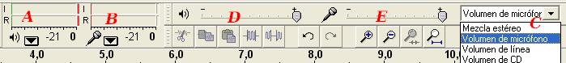

Edición de Audio y video
2.3.3. Mezcla y Medición
La barra de Medición nos indica los niveles de salida (reproducción) y entrada (grabación). Nos muestra en salida (A) el volumen de cada unos de los canales (I-R) y, en la entrada, el volumen (B) de la entrada (C) de la fuente elegida (micrófono, línea, ..) .

Por su parte la Barra de Mezclador nos muestra los valores establecidos para el volumen de los dispositivos de salida (D) y de entrada (E).
Barra Mezcladora (D) (E): consta de control de volumen de salida y de entrada.
-
-
Volumen de Salida. Permite establecer el volumen con que se reproducirá el audio abierto con Audacity y al pulsar el botón Reproducir de la barra de Control.
-
Volumen de Entrada. Utiliza el deslizador para definir el volumen con que se grabará el audio procedente del dispositivo de entrada seleccionado. No controla el volumen con que entra la señal de audio sino el volumen que utiliza para grabarla.
-
Jo.R.C.A. 2004 - 2011

Edición de Audio y Video con Software Libre by José Ramón Cerdeira Alonso is licensed under a Creative Commons Reconocimiento-No comercial-Compartir bajo la misma licencia 3.0 España License